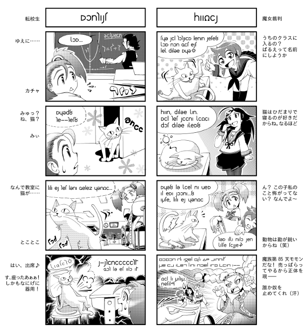

|
マンガで分かる

みなさんこんにちは。
幻日辞典の読み方には慣れましたか？
今日は辞書を使って実際にアルカの文を読んでいきます。

わぉ。ほんとの実践編って感じだねσ(ﾟｰ^*)
で、何を解読するの？ 文法も分かったし辞書も使えるようになったけど、いきなり難しい小説とかはちょっと……。
かといって、教科書に載ってるような例文でも面白くないというか……。

そこで今回はこんなのを使います。


あら、4コマ漫画じゃないの。異世界にもあるのね♪

これは「中央アルナ大学」に通う4人の女の子のお話よ。「ねこにっき」って言うの。
4コマは起承転結があって話の流れが分かりやすいし、絵があるから文化や仕草も見えて、意外と勉強になるのよ。
今回は右のマンガを使って、1コマずつ見ていくね。

ちなみにアルナ大っていうのは私とレインが通ってる学校のことよ。
大学っていっても、日本でいうとまだ高校生だけどね。
レインは一組で、リディア組。私は八組で、ラルドゥラ組。この子たちは何組なのかしらね。

ねこ組だと思います♪
|